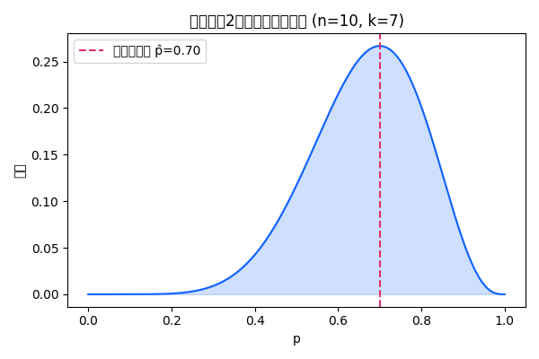

統計的推定と最尤法
統計的推定では、観測されたデータから未知の母数を推定します。推定方法には点推定と区間推定があり、前者はパラメータの具体的な値を与え、後者はその値が含まれる区間を示します。本節では広く用いられる最尤法について紹介します。
最尤法の枠組み
最尤法では、データをある確率分布の観測値と考えます。母数が取り得る値の集合をパラメータ空間と呼びます。データが与えられたとき、そのデータが観測される尤度（確率）を関数として母数の関数にしたものを尤度関数といいます【306498082253122†L61-L95】。この尤度関数を最大にする母数を最尤推定量（MLE）と呼びます。
最尤推定量の定義
\hat{\theta}_{\mathrm{MLE}} = \arg\max_{\theta \in \Theta} L(\theta; D)
ここで \(L(\theta; D)\) はパラメータ \(\theta\) の下でデータ \(D\) が観測される尤度です。尤度が最大になる \(\theta\) が最尤推定値です。
尤度曲線の例
2項分布を例に考えます。10 回の試行で表が 7 回出たとすると、表の確率 \(p\) に対する尤度関数は次のようになります。下図では尤度曲線と最尤推定値 \(\hat{p}\) を示しています。

最尤法の特徴
- 広範に適用可能 – 正規分布や指数分布、ポアソン分布など多くの確率モデルに対して容易に適用できます。
- 良い統計的性質 – MLE はサンプルサイズが大きくなると真の母数に近づく（一致性）や、分散が小さい（効率性）などの性質を持ちます。
- 計算のしやすさ – 対数尤度を最大化することで解析的または数値的に解くことができ、多くの統計ソフトウェアで実装されています。
最尤法はその単純さと一般性から、統計モデリングや機械学習の多くの手法の基盤となっています。